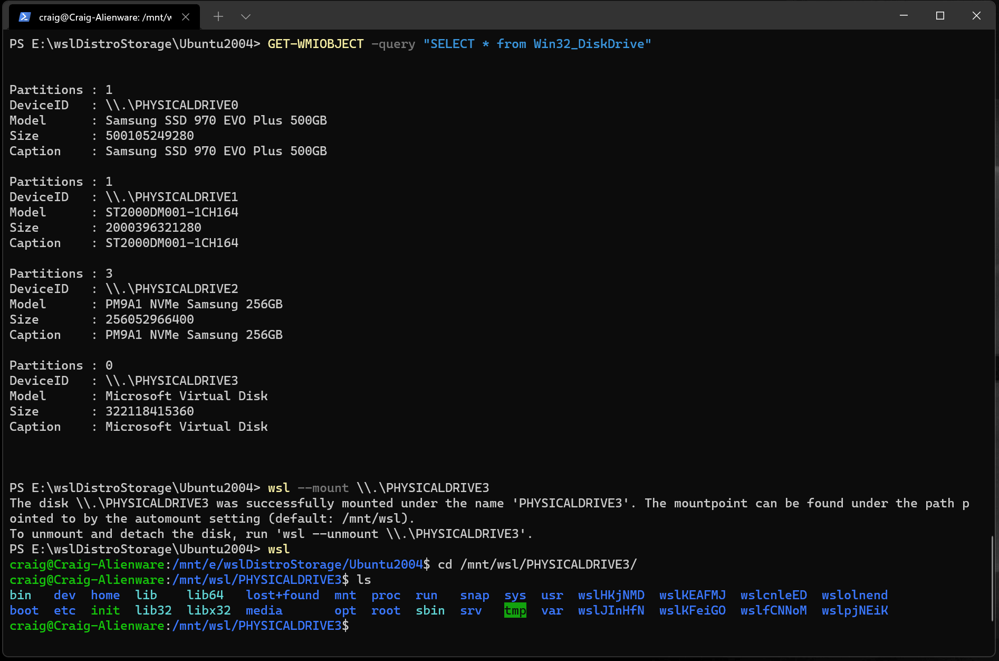
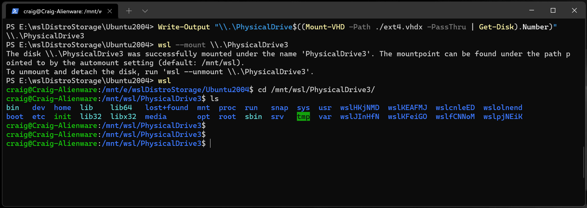

Troubleshooting Windows Subsystem for Linux
Provides detailed information about common errors and issues people run into while running Linux on the Windows Subsystem for Linux.
If you want to access a Linux disk format that isn't supported by Windows, you can use WSL 2 to mount your disk and access its content. This tutorial will cover the steps to identify the disk and partition to attach to WSL2, how to mount them, and how to access them.
If you are looking for guidance on how to connect a USB device (flash drive, SD card reader, etc), see Connect USB devices.
Note
Administrator access is required to attach a disk to WSL 2.
The WSL 2 mount command does not support mounting a disk (or partitions that belong to the disk) that is currently in use. wsl --mount always attaches the entire disk even if only a partition is requested. You can't mount the Windows installation disk.
You will need to be on Windows 11 Build 22000 or later, or be running the Microsoft Store version of WSL. You can join the Windows Insiders Program to get the latest preview builds.
In this simplest case, if you have a disk that doesn't have any partitions, you can mount it directly using the wsl --mount command. First you need to identify the disk.
Identify the disk - To list the available disks in Windows, run:
GET-CimInstance -query "SELECT * from Win32_DiskDrive"
The disks paths are available under the 'DeviceID' columns. Usually under the \\.\PHYSICALDRIVE* format.
Mount the disk - Using PowerShell, you can mount the disk using the Disk path discovered above, run:
wsl --mount <DiskPath>

If you have a disk that you aren't sure what file format it is in, or what partitions it has, you can follow the steps below to mount it.
Identify the disk - To list the available disks in Windows, run:
GET-CimInstance -query "SELECT * from Win32_DiskDrive"
The disks paths are listed after 'DeviceID', usually in the \\.\PHYSICALDRIVE* format.
List and select the partitions to mount in WSL 2 - Once the disk is identified, run:
wsl --mount <DiskPath> --bare
This will make the disk available in WSL 2. (In the case of our example, the <DiskPath> is \\.\PHYSICALDRIVE*.
Once attached, the partition can be listed by running the following command inside WSL 2:
lsblk
This will display the available block devices and their partitions.
Inside Linux, a block device is identified as /dev/<Device><Partition>. For example, /dev/sdb3, is the partition number 3 of disk sdb.
Example output:
NAME MAJ:MIN RM SIZE RO TYPE MOUNTPOINT
sdb 8:16 0 1G 0 disk
├─sdb2 8:18 0 50M 0 part
├─sdb3 8:19 0 873M 0 part
└─sdb1 8:17 0 100M 0 part
sdc 8:32 0 256G 0 disk /
sda 8:0 0 256G 0 disk
If you don't know the type of filesystem of a disk or partition, you can use this command:
blkid <BlockDevice>
This will output the detected filesystem type (under the TYPE="<Filesystem>" format).
Once you have identified the partitions you want to mount, run this command on each partition:
wsl --mount <DiskPath> --partition <PartitionNumber> --type <Filesystem>
Note
If you wish to mount the entire disk as a single volume (i.e. if the disk isn't partitioned), --partition can be omitted.
If omitted, the default filesystem type is "ext4".
Once mounted, the disk can be accessed under the path pointed to by the config value: automount.root. The default value is /mnt/wsl.
From Windows, the disk can be accessed from File Explorer by navigating to: \\wsl$\\<Distro>\\<Mountpoint> (pick any Linux distribution).
If you want to unmount and detach the disk from WSL 2, run:
wsl --unmount <DiskPath>
Note
WSL from the Microsoft Store introduces a new argument to directly mount a VHD: wsl --mount --vhd <pathToVHD>
You can also mount virtual hard disk files (VHD) into WSL using wsl --mount. To do this, you first need to mount the VHD into Windows using the Mount-VHD command in Windows. Be sure to run this command with administrator privileges. Below is an example where we use this command, and also output the disk path. Be sure to replace <pathToVHD> with your actual VHD path.
Write-Output "\\.\PhysicalDrive$((Mount-VHD -Path <pathToVHD> -PassThru | Get-Disk).Number)"
You can use the output above to obtain the disk path for this VHD and mount that into WSL following the instructions in the previous section.
You can also use this technique to mount and interact with the virtual hard disks of other WSL distros, as each WSL 2 distro is stored via a virtual hard disk file called: ext4.vhdx. By default the VHDs for WSL 2 distros are stored in this path: C:\Users\[user]\AppData\Local\Packages\[distro]\LocalState\[distroPackageName], please exercise caution accessing these system files, this is a power user workflow. Make sure to run wsl --shutdown before interacting with this disk to ensure the disk is not in use.

By default, WSL 2 will attempt to mount the device as ext4. To specify another filesystem, run:
wsl --mount <DiskPath> -t <FileSystem>
For example, to mount a disk as fat, run:
wsl --mount <Diskpath> -t vfat
Note
To list the available filesystems in WSL2, run: cat /proc/filesystems
When a disk has been mounted via WSL2 (Linux file system), it is no longer available to mount via an ext4 driver on the Windows file system.
By default, WSL 2 attempts to mount the entire disk. To mount a specific partition, run:
wsl --mount <Diskpath> -p <PartitionIndex>
This only works if the disk is either MBR (Master Boot Record) or GPT (GUID Partition Table). Read about partition styles - MBR and GPT.
To specify mount options, run:
wsl --mount <DiskPath> -o <MountOptions>
Example:
wsl --mount <DiskPath> -o "data=ordered"
Note
Only filesystem specific options are supported at this time. Generic options such as ro, rw, noatime, ... are not supported.
If the disk scheme isn't supported by any of the above options, you can attach the disk to WSL 2 without mounting it by running:
wsl --mount <DiskPath> --bare
This will make the block device available inside WSL 2 so it can be mounted manually from there. Use lsblk to list the available block devices inside WSL 2.
Note
This option is only available with WSL from the Microsoft Store
By default the mountpoint name is generated based on the physical disk or VHD name. This can be overriden with --name. Example:
wsl --mount <DiskPath> --name myDisk
To detach a disk from WSL 2, run:
wsl --unmount [DiskPath]
If Diskpath is omitted, all attached disks are unmounted and detached.
Note
If one disk fails to unmount, WSL 2 can be forced to exit by running wsl --shutdown, which will detach the disk.
At this time, only entire disks can be attached to WSL 2, meaning that it's not possible to attach only a partition. Concretely, this means that it's not possible to use wsl --mount to read a partition on the boot device, because that device can't be detached from Windows.
Only filesystems that are natively supported in the kernel can be mounted by wsl --mount. This means that it's not possible to use installed filesystem drivers (such as ntfs-3g for example) by calling wsl --mount.
Filesystems not directly supported by the kernel can be mounted via a --bare attach and then invoking the relevant FUSE driver.
Provides detailed information about common errors and issues people run into while running Linux on the Windows Subsystem for Linux.
Learn how WSL support running Linux GUI apps.
Learn how to connect a USB device to your WSL 2 Linux distribution using usbipd-win.
Find answers to frequently asked questions (FAQs) about the Windows Subsystem for Linux, such as 'What can I do with WSL?'.
Submit and view feedback for